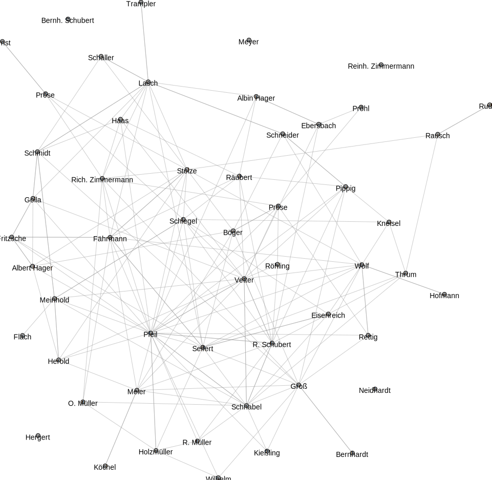
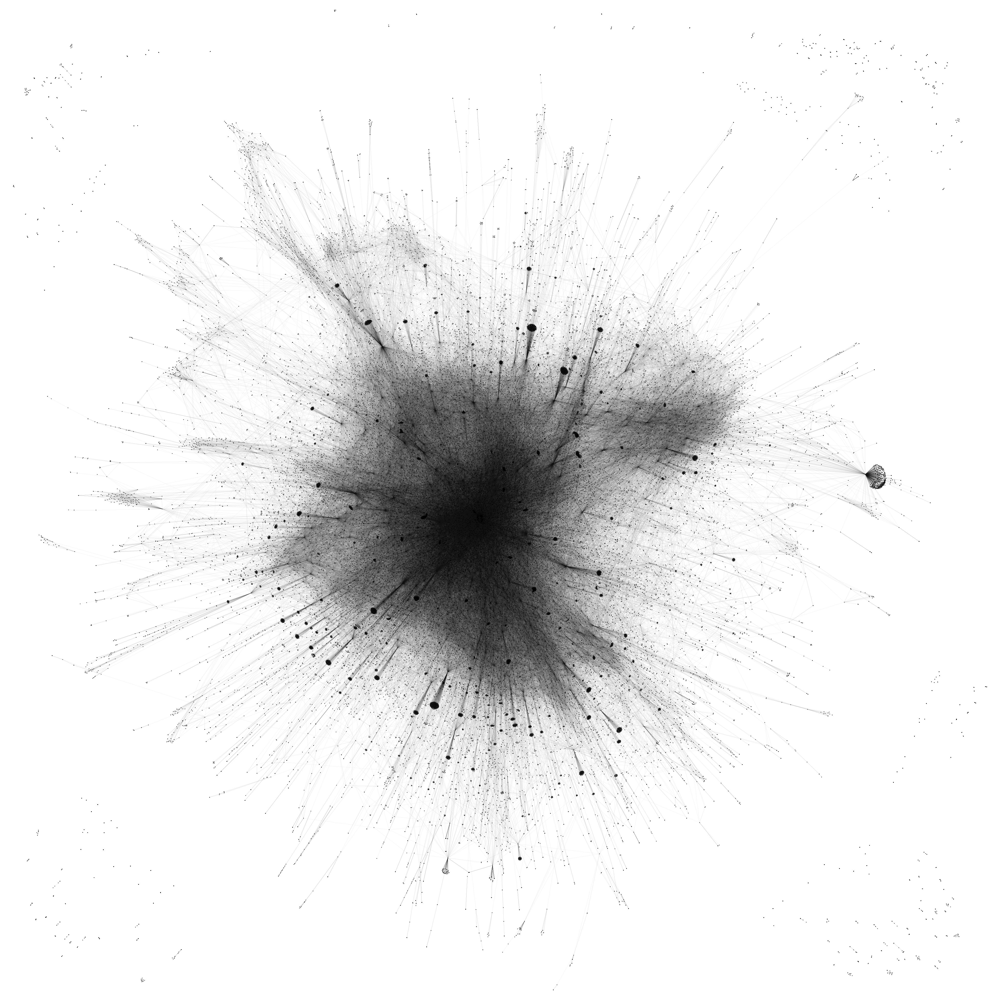
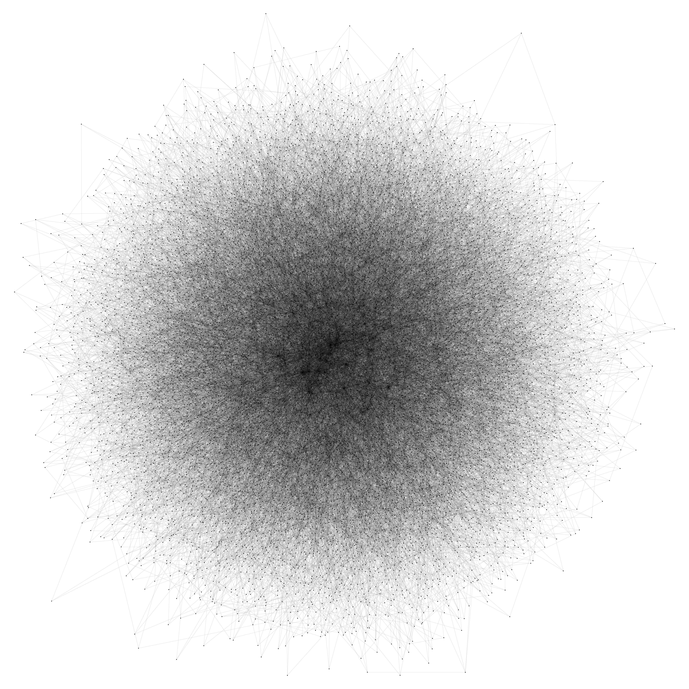
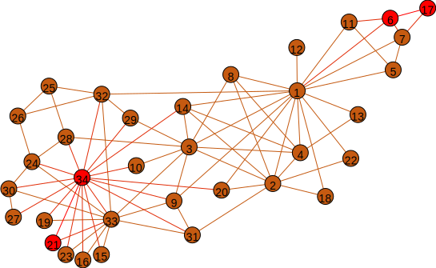
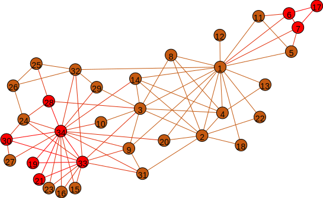
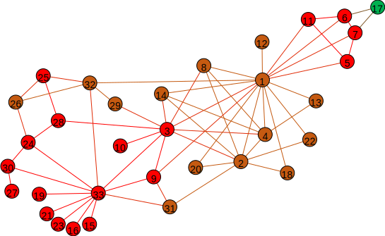
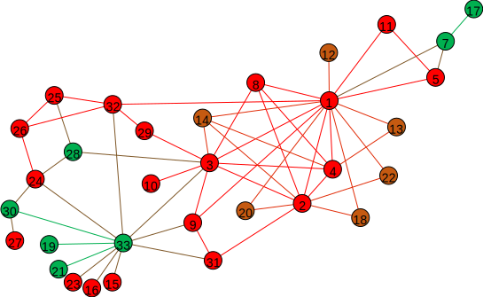
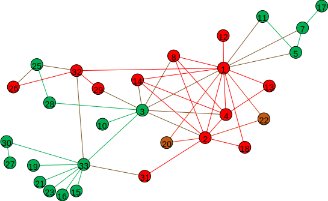
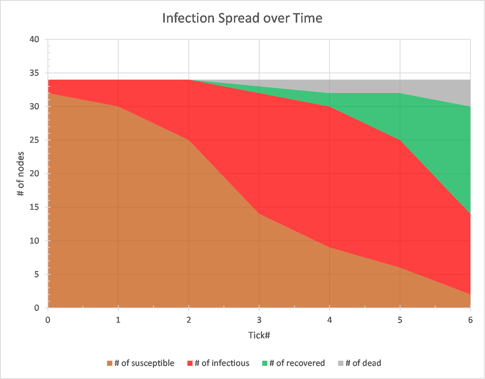
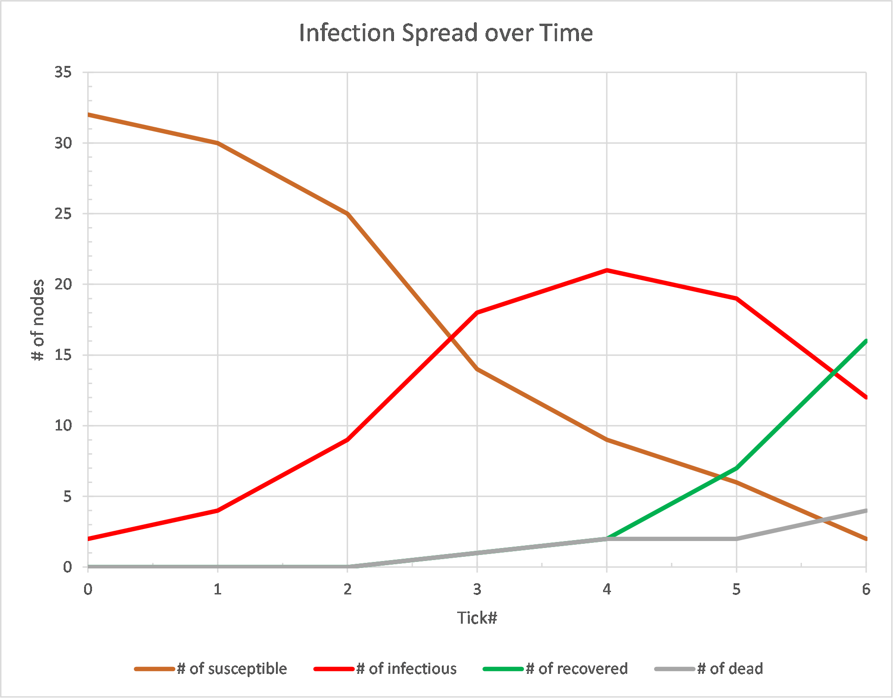

Homework Assignments¶
Homework 1¶
Posted January 28, 2021, due February 12, 2021 at 11:59:59 pm EST. Submitty page for this assignment will be made available several days before the due date. The assignment will be 100% manually graded.
This homework is worth 50 points. Write a console application that simulates Conway’s Game of Life.
Introduction¶
Conway’s Game of Life is a cellular automaton that models the evolution of a colony of some organisms that follow a set of four simple rules.
We will implement the rules of the Game of Life [1] according to the description below:
“The universe of the Game of Life is an infinite two-dimensional orthogonal grid of square cells, each of which is in one of two possible states, alive or dead, or “populated” or “unpopulated”. Every cell interacts with its eight neighbors, which are the cells that are horizontally, vertically, or diagonally adjacent. At each step in time, the following transitions occur:
- Any live cell with fewer than two live neighbors dies, as if caused by underpopulation.
- Any live cell with two or three live neighbors lives on to the next generation.
- Any live cell with more than three live neighbors dies, as if by overpopulation.
- Any dead cell with exactly three live neighbors becomes a live cell, as if by reproduction.
The initial pattern constitutes the seed of the system. The first generation is created by applying the above rules simultaneously to every cell in the seed—births and deaths occur simultaneously, and the discrete moment at which this happens is sometimes called a tick (in other words, each generation is a pure function of the preceding one). The rules continue to be applied repeatedly to create further generations.”
Please note that when considering the neighbors of a cell, it might be necessary to “wrap around” the edges of the grid. For example, in a grid of size 10 by 10, the cell at
[0][0]would have its neighbors at cells[0][1],[1][1],[1][0],[1][9],[0][9],[9][9],[9][0], and[9][1]. Therefore, in our implementation a cell will always have exactly 8 neighbors.
User interface¶
The program should allow a user to specify the initial (seed) input file name and the output files pattern name, as well as the number of steps in the simulation either through command line arguments or by typing the requested information in the console during program execution.
The format of the file which contains grid information (either initial, i.e., before simulation starts, or after a certain step of the simulation) is as follows:
- The first line contains, in order, the number of rows and the number of columns in the grid, separated by a comma and a space. E.g.,
5, 7means that there are 5 rows and 7 columns in the grid. There are no spaces after the number of columns.- All lines starting from the second one contain the state of one row in the grid, starting with row #0. The state of each cell is designated with either 0 (cell is dead) or 1 (cell is alive). The states of individual cells are separated by a comma followed by a space (there is no comma and/or space after the last 0 or 1 in the line). For example, if the third line of the file (the second line of the grid part of the file) is
0, 0, 0, 1, 0, 0, 0it corresponds to the following cell states inrow[1]:row[1][0],row[1][1],row[1][2],row[1][4],row[1][5], androw[1][6]are dead, androw[1][3]is alive.- All lines end with the new line character.
Here is an example of the seed file:
5, 7 0, 0, 0, 0, 0, 0, 0 0, 0, 0, 1, 0, 0, 0 0, 0, 0, 1, 1, 1, 1 1, 0, 0, 0, 1, 1, 1 1, 1, 1, 1, 1, 1, 1
Implementation¶
- Write an output grid file after each tick. Append tick number to the output file name to ensure that each grid is in its own file, and files don’t get overwritten by later ticks.
- Use only standard Java arrays for this program, not collections.
- Validate any data entered by the user. Make sure that the program rejects any invalid data and handles all error conditions appropriately.
- Use Javadoc to document all classes and methods. Make sure to follow coding conventions.
- Provide comments sufficient to quickly understand implementation details.
- Provide script (command, batch, bash) files that would compile and execute your Java code, as well as compile all Javadoc comments into HTML documentation on at least Windows and Linux/MacOS platforms. Make sure that your code can be executed on any client system that has JDK 8 or later installed.
- Write a readme.txt file explaining how to use the script files and containing a brief description and any other information that a user needs to know in order to compile and run the application. Include the OS name and version that was used to develop and test your solution. If you use any kind of virtual machine (e.g., Virtual Box, WSL, etc.) you need to provide detailed information on both the host and the guest systems. Please avoid duplicating any information already contained in Javadoc documentation or the user manual. readme.txt would typically be fairly short. It should be a plain text or MD file, not a PDF or Microsoft Word/Open Office document.
Documentation¶
- A user manual that describes your application. It should contain detailed descriptions of all application features, inputs and outputs, formats of files, possible error messages and their meaning, and any other information which might be of interest to an end user. Include examples of input and output files, specifying what parameters of the simulation were used to obtain the corresponding output files. The user manual should be well-written and represent a document with full sentences and paragraphs, as well as images where appropriate, not just some notes or screenshots and text fragments. It should be written using the appropriate style and tone, given the target audience.
- A testing manual that discusses your testing plan, testing strategy, testing scenario, and contains the description of a comprehensive set of test cases. The test suite doesn’t have to be exhaustive but it should provide sufficient coverage of both common and corner cases. If test cases require any external resources (files, user input, etc.), those should be provided or carefully specified. Note that those are not unit tests which you are encouraged to write but don’t have to submit for this assignment. Similarly to the user manual, the testing manual is a well-written document but it usually targets a different audience.
- If the user manual or the testing manual references any additional files, like example input files and “expected” output files, such files should be provided in their original formats.
What to submit¶
- All Java source code. Source code should have sufficient amount of comments. All classes and non-private methods (optional for private methods and fields) need to have meaningful and detailed Javadoc comments. In addition, make sure author and version information is also included in Javadoc comments. If you prefer to not be identified as the author of your code by your peers during peer grading, remove all identifying information (your name, RCSID, etc.) from Javadoc comments and all files that you submit.
- readme.txt described in the “Implementation” section.
- Script files for compiling and running the program, as well as generating Javadoc on at least two different platforms (Windows and Linux/MacOS).
- Generated Javadoc documentation in HTML format.
- manual.pdf described in the “Documentation” section.
- tests.pdf described in the “Documentation” section.
- The entire submission should be one packed file (either ZIP or TGZ). All files inside the packed file should be organized by directories, using the following structure:
- src/ contains subdirectories that correspond to package names and contain *.java files only in the lowest directory level. E.g., src/edu/rpi/cs/csci4960/s21/kuzmik2/hw01/gol/GameOfLive.java
- docs/ is the directory where your scripts should put generated Javadoc files in this directory, so that index.html is directly under docs/ (i.e., docs/index.html)
- manuals/ contains readme.txt, manual.pdf, tests.pdf, and any accompanying files
- scripts/ contains scripts
- you may include additional directories if you need to (e.g., bin/) but make sure you describe what they are and what they contain in readme.txt
Grading rubric¶
- Javadoc, readme file, script(s): 4 points
- User manual: 8 points
- Testing manual and test cases: 5 points
- Source code quality, following coding style conventions: 3 points
- Program quality (code compiles and runs without unexpected exceptions, performs tasks according to the specification and produces correct output results, etc.): 30 points
[1] “Conway’s game of life,” 2021, Accessed on: January 27, 2021. [Online]. Available: https://en.wikipedia.org/wiki/Conway%27s_Game_of_Life
Homework 2¶
Posted February 11, 2021, due March 4, 2021 at 11:59:59 pm EST. Submitty page for this assignment will be made available several days before the due date. The assignment will be 100% manually graded.
This assignment is worth 50 points. Upgrade your implementation of the Conway’s Game of Life from Homework 1 to have a GUI instead of a console user interface.
User interface¶
The program should interact with a user using a rich GUI based on Swing/AWT. In particular, the following features should be provided:
- A menu bar with drop-down menus.
- A toolbar with buttons for common commands.
- A configuration panel (accessible through a menu and a toolbar button) which allows a user to set different application parameters (e.g., different UI colors, default folder and/or file name patterns, default grid size, total number of ticks, etc.)
- A visualization of the game grid showing dead and alive cells using different colors. For cells that are alive, the shades of the main color used for alive cells should be used to indicate the generation number (i.e., the number of ticks that a particular cell has survived).
- Visual components with optional hot keys that would allow a user to go to a particular tick and move up/down a tick.
- A visual component which would present some common statistics about the tick configuration being displayed (current tick number, the number of dead and alive cells, the difference in the number of dead and alive cells as compared to the previous tick, etc.)
- Feel free to add any extra features that you think would be useful.
Implementation¶
- On application start, present an empty (all cells are shown dead) initial grid. Allow the user to either load the initial grid configuration from a file or specify it visually using the mouse and/or hot keys.
- Provide a user with the capability to load or save file(s) at any time. For output file(s), give a user a choice of saving a grid for all ticks or only for a certain range of ticks.
- For all input and output files, adhere to the same file format that was used in Homework 1.
- Reuse existing standard components whenever possible. For instance, do not design your own file selection dialog box but reuse an existing one.
- Design your user interface with the usability in mind. Make the interface convenient for an average/typical user of your application. Document any assumptions you made or any limitations that your application has.
- All data entered by the user or read from the input files should be validated against the set of rules for allowable values. The program should be user friendly and provide feedback when input values are incorrect, output files are about to be overwritten, etc.
- Make sure that all configuration parameters are persisted between application runs (i.e., when a user quits the program and then launches it again, all settings should retain their values as set by the user; if no stored configuration data can be found, use some reasonable program default values).
- Assign all your source code to the appropriate package(s). Make package names hierarchical and descriptive, e.g.,
edu.rpi.cs.csci4960.s21.rcsid.hw02.gol_guiwherercsidis your RCS ID.- Use Swing/AWT. Do not use Java FX for this assignment.
- Write a readme.txt file explaining how to use the script files and containing a brief description and any other information that a user needs to know in order to compile and run the application. Include the OS name and version that was used to develop and test your solution. If you use any kind of virtual machine (e.g., Virtual Box, WSL, etc.) you need to provide detailed information on both the host and the guest systems. Please avoid duplicating any information already contained in Javadoc documentation or the user manual. readme.txt would typically be fairly short. It should be a plain text or MD file, not a PDF or Microsoft Word/Open Office document.
Documentation¶
- A user manual that describes your application. It should contain detailed descriptions of all application features, inputs and outputs, formats of files, possible error messages and their meaning, and any other information which might be of interest to an end user. Include screenshots and examples of input and output files, specifying what parameters of the simulation were used to obtain the corresponding output files. The user manual should be well-written and represent a document with full sentences and paragraphs, as well as images where appropriate, not just some notes or screenshots and text fragments. It should be written using the appropriate style and tone, given the target audience.
- A testing manual that discusses your testing plan, testing strategy, testing scenario, and contains the description of a comprehensive set of test cases. The test suite doesn’t have to be exhaustive but it should provide sufficient coverage of both common and edge cases. If test cases require any external resources (files, user input, etc.), those should be provided or carefully specified. Note that those are not unit tests which is a separate requirement (see below). Similarly to the user manual, the testing manual is a well-written document but it usually targets a different audience.
- If the user manual or the testing manual references any additional files, like example input files and “expected” output files, such files should be provided in their original formats.
What to submit¶
- All Java source code. Source code should have sufficient amount of comments. All classes and non-private methods (optional for private methods and fields) need to have meaningful and detailed Javadoc comments. In addition, make sure author and version information is also included in Javadoc comments. If you prefer to not be identified as the author of your code by your peers during peer grading, remove all identifying information (your name, RCSID, etc.) from Javadoc comments and all files that you submit.
- readme.txt described in the “Implementation” section.
- Script files for compiling and running the program, as well as generating Javadoc and running unit tests on at least two different platforms (Windows and Linux/MacOS).
- A comprehensive set of unit tests and a log of their execution showing that all unit tests passed.
- Generated Javadoc documentation in HTML format.
- manual.pdf described in the “Documentation” section.
- tests.pdf described in the “Documentation” section.
- The entire submission should be one packed file (either ZIP or TGZ). All files inside the packed file should be organized by directories, using the following structure:
- src/ contains subdirectories that correspond to package names and contain *.java files only in the lowest directory level. E.g., src/edu/rpi/cs/csci4960/s21/kuzmik2/hw02/gol_gui/GameOfLive.java
- docs/ is the directory where your scripts should put generated Javadoc files in this directory, so that index.html is directly under docs/ (i.e., docs/index.html)
- manuals/ contains readme.txt, manual.pdf, tests.pdf, and any accompanying files
- scripts/ contains scripts
- you may include additional directories if you need to (e.g., bin/) but make sure you describe what they are and what they contain in readme.txt
Grading rubric¶
- Javadoc, readme file, script(s): 4 points
- User manual: 8 points
- Testing manual and test cases, unit tests: 5 points
- Source code quality, following coding style conventions: 3 points
- Program quality (code compiles and runs without unexpected exceptions, performs tasks according to the specification and produces correct output results, GUI looks visually attractive, all components maintain proper shape when windows are moved, resized, maximized, etc., GUI has no considerable lags, etc.): 25 points
- Peer grading score: 5 points
Homework 3¶
Posted March 4, 2021, due March 29, 2021 at 11:59:59 pm EDT. Submitty page for this assignment will be made available several days before the due date.
This assignment is worth 50 points. You will need to create an application that implements a network version of the Battleship game[2] for two players.
User interface¶
The program should interact with a user using a rich GUI. In particular, the following features should be provided:
- A menu bar with drop-down menus.
- A toolbar with buttons for common commands.
- A configuration panel (accessible through a menu and a toolbar button) which allows a user to set different application parameters (e.g., different UI colors, network settings, size of the grid, number of ships and their sizes, etc.)
- A visualization of the game grid showing ships and “shots”, using different colors for better visual impression.
- When a game ends, both players get a corresponding message and are then offered to play another game.
- A panel with the names of players and the current score (every time a player wins they score one point).
- A panel with a count-down timer that shows the amount of time remaining to make a move. If a player doesn’t make a move before time is up, they lose. The amount of time should be configurable (default is 30 seconds). However, this amount has to be the same for both players.
Implementation¶
- On application start, ask user if they want to attempt connecting to another player or wait for another player to connect. Make sure that a user has an opportunity to adjust network settings at this time.
- Application supports a game played over the network by two players. It should not rely on a separate centralized “server” component to function. In other words, the application implements a peer-to-peer connectivity pattern, not a centralized model with a dedicated server.
- Design your user interface with the usability in mind. Make the interface convenient for an average/typical user of your application. Document any assumptions you made or any limitations that your application has.
- All data entered by the user or read from the input files should be validated against the set of rules for allowable values. The program should be user friendly and provide feedback when input values are incorrect.
- Make sure that all configuration parameters are persisted between application runs (i.e., when a user quits the program and then launches it again, all settings should retain their values as set by the user; if no stored configuration data can be found, use some reasonable program default values).
- Assign all your source code to the appropriate package(s). Make package names hierarchical and descriptive, e.g.,
edu.rpi.cs.csci4960.s21.rcsid.hw03.battleshipwherercsidis your RCS ID.- You can use Swing/AWT or Java FX for this assignment.
- Write a readme.txt file explaining how to use the script files and containing a brief description and any other information that a user needs to know in order to compile and run the application. Include the OS name and version that was used to develop and test your solution. If you use any kind of virtual machine (e.g., Virtual Box, WSL, etc.) you need to provide detailed information on both the host and the guest systems. Please avoid duplicating any information already contained in Javadoc documentation or the user manual. readme.txt would typically be fairly short. It should be a plain text or MD file, not a PDF or Microsoft Word/Open Office document.
Documentation¶
- A user manual that describes your application. It should contain detailed descriptions of all application features, inputs and outputs, formats of files, possible error messages and their meaning, and any other information which might be of interest to an end user. Include screenshots and examples of files, as necessary. The user manual should be well-written and represent a document with full sentences and paragraphs, as well as images where appropriate, not just some notes or screenshots and text fragments. It should be written using the appropriate style and tone, given the target audience.
- A testing manual that discusses your testing plan, testing strategy, testing scenario, and contains the description of a comprehensive set of test cases. The test suite doesn’t have to be exhaustive but it should provide sufficient coverage of both common and edge cases. If test cases require any external resources (files, user input, etc.), those should be provided or carefully specified. Note that those are not unit tests which is a separate requirement (see below). Similarly to the user manual, the testing manual is a well-written document but it usually targets a different audience.
- If the user manual or the testing manual references any additional files, like example configuration files, such files should be provided in their original formats.
What to submit¶
- All Java source code. Source code should have sufficient amount of comments. All classes and non-private methods (optional for private methods and fields) need to have meaningful and detailed Javadoc comments. In addition, make sure author and version information is also included in Javadoc comments. If you prefer to not be identified as the author of your code by your peers during peer grading, remove all identifying information (your name, RCSID, etc.) from Javadoc comments and all files that you submit.
- readme.txt described in the “Implementation” section.
- Script files for compiling and running the program, as well as generating Javadoc and running unit tests on at least two different platforms (Windows and Linux/MacOS).
- A comprehensive set of unit tests and a log of their execution showing that all unit tests passed.
- Generated Javadoc documentation in HTML format.
- manual.pdf described in the “Documentation” section.
- tests.pdf described in the “Documentation” section.
- The entire submission should be one packed file (either ZIP or TGZ). All files inside the packed file should be organized by directories, using the following structure:
- src/ contains subdirectories that correspond to package names and contain *.java files only in the lowest directory level. E.g., src/edu/rpi/cs/csci4960/s21/rcsid/hw03/battleship/Battleship.java
- docs/ is the directory where your scripts should put generated Javadoc files in this directory, so that index.html is directly under docs/ (i.e., docs/index.html)
- manuals/ contains readme.txt, manual.pdf, tests.pdf, and any accompanying files
- scripts/ contains scripts
- you may include additional directories if you need to (e.g., bin/) but make sure you describe what they are and what they contain in readme.txt
Grading rubric¶
- Javadoc, readme.txt file, script(s): 4 points
- User manual: 8 points
- Testing manual and test cases, unit tests: 5 points
- Source code quality, following coding style conventions: 3 points
- Program quality (code compiles and runs without unexpected exceptions, performs tasks according to the specification and produces correct output results, GUI looks visually attractive, all components maintain proper shape when windows are moved, resized, maximized, etc., GUI has no considerable lags, etc.): 25 points
- Peer grading score: 5 points
[2] “Battleship (game),” 2021, Accessed on: March 2, 2021. [Online]. Available: https://en.wikipedia.org/wiki/Battleship_(game)
Homework 4¶
Posted March 24, 2021, due April 20, 2021 at 11:59:59 pm. Submitty page for this assignment will be made available several days before the due date.
This assignment is worth 50 points. Create a GUI application that simulates the spread of an infection among a population whose contacts are given by a graph. The application must be able to handle very large graphs with thousands to millions (hopefully!) nodes/edges by performing the simulation concurrently using multiple threads.
Epidemic Simulation¶
To make your implementation easier, we will assume a very simple (and probably not very accurate but hopefully still useful) epidemic model. Feel free to implement a more sophisticated and more realistic model, if you would like.
A node can be in one of three states: susceptible, infected, and recovered.
An edge between two nodes corresponds to the contact (ability to directly interact) between two nodes.
Edges are not directed. You can represent an undirected edge with two directed edges connecting the same two nodes in opposite directions.
Infection can only spread from one node to another if they are directly connected by an edge.
Simulation uses discrete time steps which we will call ticks to be consistent with our terminology from the Conway’s Game of Life assignments.
- Initially, all nodes loaded from the graph file are susceptible except for a certain set of nodes which are considered infected. Implement at least the following three methods of selecting initially infected nodes:
- Random
nnodes are marked as infected.- All nodes with degree greater than
sare marked as infected. Degree is defined as the number of edges incident to a node.- A single random node is selected as a seed infected node and then the breadth first search (BFS) algorithm is run from that seed node until
ktotal nodes (including the seed node) are visited. Then all theseknodes are marked as infected.Once the graph file has been loaded and initially infected nodes have been marked, simulation can start.
- At each step of the simulation for each infected node the following infection propagation happens:
The number of susceptible neighbors of an infected node that will become infected in the next tick is determined such that the force of infection (the rate at which susceptible nodes become infected) approaches the \({\lambda}\) parameter of the simulation. We define the force of infection as the number of susceptible neighbors of currently infected nodes that become infected in the next tick divided by the number of currently infected nodes.
If the determined number of susceptible nodes that will become infected is greater than or equal to the number of susceptible neighbors of an infected node, all susceptible neighbors will become infected. Otherwise, exactly the determined number of susceptible neighbors will become infected. Specific susceptible neighbors that become infected are selected at random.
- Examples that show how infected nodes are sequentially processed to determine the state of the graph for the next tick:
\({\lambda}\) is 0.7
Infected node Degree Determined # of susceptible neighbors to be infected Force of infection 1 5 1 1 2 1 0 0.5 3 3 1 0.67 4 1 1 0.75 5 150 0 0.6 6 53 1 0.67 7 3 1 0.71 8 7 1 0.75 … … … Should approach 0.7 \({\lambda}\) is 1.6
Infected node Degree Determined # of susceptible neighbors to be infected Force of infection 1 5 2 2 2 1 1 1.5 3 3 2 1.67 4 1 1 1.5 5 150 2 1.6 6 53 1 1.5 7 3 2 1.57 8 7 2 1.63 … … … Should approach 1.6 \({\lambda}\) is 5.7
Infected node Degree Determined # of susceptible neighbors to be infected Force of infection 1 5 5 5 2 1 1 3 3 3 3 3 4 1 1 2.5 5 150 19 5.8 6 53 5 5.67 7 3 3 5.29 8 7 7 5.5 … … … Should approach 5.7 An infected node stays infected for
tticks. Afterwards, it either dies with probabilitydor recovers with probability1 - d. A dead node is removed from the graph along with all its edges.A node which was infected and then recovered cannot become infected again. Optionally, you can introduce an additional parameter which defines the probability of re-infecting a recovered node.
For simplicity, we will assume that no new nodes/edges are added to the graph. Optionally, feel free to allow new nodes to be born with a certain birth rate.
User interface¶
The program should interact with a user using a rich GUI.
- The main window of the application should contain at least a menu, a toolbar, and a panel/component which shows the plot of simulation statistics as simulation progresses.
- The plot should have time (in ticks) along its X-axis and the number of nodes along its Y-axis. At the minimum, the following data should be plotted: the number of infected nodes, the number of recovered nodes, and the number of dead nodes. The plot should be automatically updated when the simulation runs and should remain visible when the simulation is paused. The plot should be properly formatted with labels, tick marks, legend, different colors for different statistics, etc.
- The application should contain controls that allow a user to load the graph from a file, set different configuration parameters, and start, pause, and reset the simulation.
- When application starts, its main window should be maximized.
- The configuration panel/dialog should allow users to specify various configurable parameters (e.g., random number generator seed value, colors, themes, etc.), all simulation parameters (the number of ticks to simulate, the method of selecting initially infected nodes, values of
n,s,kd,t, \({\lambda}\), etc.), and an additional parameter that determines the number of threads (1, 2, 4, 8, etc.) that will be running the simulation concurrently (do not count the Event Dispatch Thread of AWT or the main thread if it is not involved in the simulation itself). The number of processors (cores) in the system should be determined automatically and reported to the user, e.g., via a label on the configuration panel.
Implementation¶
- You may, if you wish, start by reviewing your own implementation of the Graph ADT from the Principles of Software. You might need to update it to make thread safe and efficient but it could be a good starting point.
- The application should be capable of reading files in at least the adjacency list format described in [1] of Lecture 12-13.
- Simulation is performed concurrently by multiple threads. You will need to decide on how graph is partitioned among the threads. One of the simplest partitioning methods would be to assign roughly the same number of nodes to each thread. For example, if a graph has 175,600 nodes, and the simulation is run with 4 threads, then thread 1 will get the first 43,900 nodes, thread 2 will get the second 43,900 nodes, etc. Optionally, you may explore more advanced partitioning methods that provide better balancing.
- Implement synchronization such that node states are updated only at the end of the tick, i.e., each node should see the “old” value of its neighbors’ state until the end of the tick. In this case it doesn’t matter exactly when during the tick the “new” state of the node was computed.
- Reuse existing standard components whenever possible. For instance, do not design your own file selection dialog box but reuse an existing one.
- Design your user interface with the usability in mind. Make the interface convenient for an average/typical user of your application. Document any assumptions you made or any limitations that your application has.
- Make sure your code is well structured. Do not put all your code into one “God” class or a small number of overly complicated huge classes.
- All data entered by the user or read from the input files should be validated against the set of rules for allowable values. The program should be user friendly and provide feedback when input values are incorrect, input file is not in the correct format, etc.
- All configuration parameters should be persisted between application runs (i.e., when a user quits the program and then launches it again, all settings should retain their values as set by the user; if no stored configuration data can be found, use some reasonable program default values).
- Assign all your source code to the appropriate package(s). Make package names hierarchical and descriptive, e.g.,
edu.rpi.cs.csci4960.s21.rcsid.hw04.epidemicswherercsidis your RCS ID.- You can use Swing/AWT or Java FX for this assignment.
- Write a readme.txt file explaining how to use the script files and containing a brief description and any other information that a user needs to know in order to compile and run the application. Include the OS name and version that was used to develop and test your solution. If you use any kind of virtual machine (e.g., Virtual Box, WSL, etc.) you need to provide detailed information on both the host and the guest systems. Please avoid duplicating any information already contained in Javadoc documentation or the user manual. readme.txt would typically be fairly short. It should be a plain text or MD file, not a PDF or Microsoft Word/Open Office document.
- To test your application you will need some graphs. It might be helpful to write some code to generate certain special graphs with the specified number of nodes and edges. Two simple but useful special graphs would be a random graph and a complete graph. In addition, you can also find many real-world graphs on the Internet. One example would be the Brightkite location-based social networking service [3] graph. The formats of datasets available on the Internet may vary but many of them would be in the adjacency list format described in [1] of Lecture 12-13 or the format which is very similar to it.
Experiments¶
Perform the following experiments, collect timing data, and write a report with the plot and analysis of results. Plots described in this section are only needed for the report and can be generated using any tools or software you like (Matlab, Microsoft Excel, Matplotlib, etc.) These plots are different from the plots that your application visualizes during the simulation.
- Analyze the simulation algorithm that you implemented. Write a few sentences discussing the time complexity of your solution and what constitutes the size of the problem in your complexity function. It can be the number of nodes in your graph, the number of edges, the number of nodes plus the number of edges, etc.
- Run the simulation for a given number of ticks varying the number of threads and the size (as defined by your complexity function) of the graph. Select graph sizes based on the system that you are using to ensure that graphs are as large as possible but a single simulation does not take longer than an hour or so. Make sure to select the number of threads to be 1, 2, 4, 8, 16, 64, etc. up to at least twice the number of processors/cores in your system. For instance, if your machine has 8 cores and you determined that a single-threaded run of 500 ticks on the graph of size 1,000,000 takes about an hour, then run your experiments for the following configurations:
Graph size, nodes/edges/etc. # of threads Time, s 10,000 1 10,000 2 10,000 4 10,000 8 10,000 16 100,000 1 100,000 2 100,000 4 100,000 8 100,000 16 1,000,000 1 1,000,000 2 1,000,000 4 1,000,000 8 1,000,000 16
- For each run, collect the running time of the entire simulation.
- Plot collected data, indicating runtime on the Y-axis and the number of threads on the X-axis. (Each plot will correspond to a particular graph size.) Make sure each plot has a caption that includes a brief description of what is plotted and mentions the number of threads.
- Write a few paragraphs, describing what can be observed on the plots and explaining the performance of the application.
Documentation¶
- A user manual that describes your application. It should contain detailed descriptions of all application features, inputs and outputs, formats of files, possible error messages and their meaning, and any other information which might be of interest to an end user. Include screenshots and examples of files, as necessary. The user manual should be well-written and represent a document with full sentences and paragraphs, as well as images where appropriate, not just some notes or screenshots and text fragments. It should be written using the appropriate style and tone, given the target audience.
- A testing manual that discusses your testing plan, testing strategy, testing scenario, and contains the description of a comprehensive set of test cases. The test suite doesn’t have to be exhaustive but it should provide sufficient coverage of both common and edge cases. If test cases require any external resources (files, user input, etc.), those should be provided or carefully specified. Note that those are not unit tests which is a separate requirement (see below). Similarly to the user manual, the testing manual is a well-written document but it usually targets a different audience.
- If the user manual or the testing manual references any additional files, like example configuration files, such files should be provided in their original formats.
What to submit¶
- All Java source code. Source code should have sufficient amount of comments. All classes and non-private methods (optional for private methods and fields) need to have meaningful and detailed Javadoc comments. In addition, make sure author and version information is also included in Javadoc comments. If you prefer to not be identified as the author of your code by your peers during peer grading, remove all identifying information (your name, RCSID, etc.) from Javadoc comments and all files that you submit.
- readme.txt described in the “Implementation” section.
- Script files for compiling and running the program, as well as generating Javadoc and running unit tests on at least two different platforms (Windows and Linux/MacOS).
- A comprehensive set of unit tests and a log of their execution showing that all unit tests passed.
- Generated Javadoc documentation in HTML format.
- manual.pdf described in the “Documentation” section.
- report.pdf described in the “Experiments” section. This document should contain the report with timings data, plots, and your analysis of the experimental results.
- tests.pdf described in the “Documentation” section.
- The entire submission should be one packed file (either ZIP or TGZ). All files inside the packed file should be organized by directories, using the following structure:
- src/ contains subdirectories that correspond to package names and contain *.java files only in the lowest directory level. E.g., src/edu/rpi/cs/csci4960/s21/rcsid/hw04/epidemics/SimEngine.java
- docs/ is the directory where your scripts should put generated Javadoc files in this directory, so that index.html is directly under docs/ (i.e., docs/index.html)
- report/ contains report.pdf and any accompanying files
- manuals/ contains readme.txt, manual.pdf, tests.pdf, and any accompanying files
- scripts/ contains scripts
- you may include additional directories if you need to (e.g., bin/) but make sure you describe what they are and what they contain in readme.txt
Grading rubric¶
- Javadoc, readme.txt file, script(s): 4 points
- User manual: 6 points
- Testing manual and test cases, unit tests: 5 points
- Quality of the report (plots are easy to read and contain data points which look reasonable, explanations and analysis correspond to the plots and overall make sense, etc.): 8 pts
- Source code quality, following coding style conventions: 2 points
- Program quality (code compiles and runs without unexpected exceptions, performs tasks according to the specification and produces correct output results, threads are properly synchronized, there are no race conditions or deadlocks, GUI looks visually attractive, all components maintain proper shape when windows are moved, resized, maximized, etc., GUI has no considerable lags, etc.): 20 points
- Peer grading score: 5 points
Example Networks¶
We encourage you to test your simulation on different networks of various size. Start with a small network and then challenge your application with networks of increasing size. Small networks will make it easy to assess the correctness of your simulation while large networks would allow you to gather experimental data on parallel performance.
There are many collections of datasets available online. One of popular resources is Stanford Large Network Dataset Collection [4].
If you browse Internet for networks to try, you may find that many of them are available in the adjacency list format which is close to the one used in this assignment but relies on spaces or tabs instead of a comma as a separator between the ids of two nodes. You can easily convert this format into the CSV format expected by your application. Just load the original file into any text editor and run the “Replace All” function to replace all spaces or tabs with commas. You can practice with network [3] as an example.
Other formats are also usually easy to convert to the CSV format you need with just a few lines of Java code. The Marvel Universe dataset described below is one such example.
Finally, to generate a random or other special type of synthetic graphs, you can use one of may graph tools available. Gephi [5] is an example of a GUI tool for network analysis with an extensive set of features and a reasonable learning curve. It is distributed under the dual license CDDL 1.0 and GNU General Public License v3. You might also be interested to learn that Gephi was written in Java.
Below are some example networks you can start with:
- Zachary’s karate club social network [6]
One of the most famous small networks. In network science, there is a joke that if you developed some algorithm but can’t make it run correctly on the Zachary’s karate club network, you should not even bother trying larger networks. This dataset represents a social network of members of a karate club. Nodes are people (club members), and edges are connections (you can treat them as friendship relationships) between members. There was some argument between two teachers of the club which caused most members to take the side of one of the teachers which can be easily observed in the network visualization.
34 nodes and 78 edges.
For our assignment, you can use this network to model the spread of infection among the members of the club. We can assume that if members are friends, they meet with each other frequently which creates the opportunity for the infection to spread. Try infecting different nodes initially. For example, one of the hub nodes, like teachers (nodes 1 and 34). Or some not so well connected nodes, like 17 or 24.
Links: Zachary’s karate club dataset, Zachary’s karate club network visualization (PNG), Zachary’s karate club network visualization (SVG)
- German boys’ school class network [7]
One of the first (if not the very first) documented attempts to collect information for what later became known as social networks. This dataset represents a graph of social interactions among students as observed by a teacher. Nodes are students, and edges are friendship relations between students. The data was gathered by “combining observation, interviewing pupils and parents, and analyzing school essays during one school year” [7]. The original network is directed (if A thinks they are friends with B, it’s not necessarily that B also thinks they are friends with A) but I modified to be undirected.
53 nodes and 179 edges.
For our assignment, you can use this network to model the spread of infection among the students. We can assume that if students are friends, they meet with each other frequently or have some other close interactions with each other which creates the opportunity for the infection to spread. Try infecting different nodes initially. For example, one of the streetheroes, like Pfeil or Lasch (whose grandmother sells sweets at fairs which allows him to “buy into” friendships with her sweets and her money). Or some not so well connected nodes, like Bernhardt or Pröhl.
Links: German boys’ school class network, German boys’ school class network visualization (PNG), German boys’ school class network visualization (SVG)

- Marvel Universe network
This dataset should be familiar to you if you previously took CSCI 2600 Principles of Software course at RPI. Nodes represent characters from Marvel comic books, and edges correspond to characters who appeared together in at least one book.
6,421 nodes and 167,100 edges.
For our assignment, you can use this network to model the spread of infection among book characters. We can assume that if two characters appeared in the same book, they communicate with each other which creates the opportunity for the infection to spread. Try infecting different nodes initially. For example, one of the biggest hubs, like a node that has degree of 1,903. If you want to test your knowledge of the Marvel Universe, can you guess who this character appearing in the same book (of course, across different books) with 1,903 other characters is? If you want to check your answer, select the paragraph below with your mouse to reveal the correct answer. You can also try infecting some nodes on the outskirts of the network which appeared in only book, like “Goom” or “Chakra II”, and see how infection spreads.
Captain AmericaLinks: Marvel Universe network, Marvel Universe network visualization (PNG), Marvel Universe network visualization (SVG)

- Enron email network [8]
This dataset was made public by the Federal Energy Regulatory Commission as it was investigating Enron’s violations during the Enron scandal. Nodes are Enron employees identified by their email addresses, and edges correspond to sending at least one email between the nodes.
36,692 nodes and 367,662 edges.
For our assignment, you can use this network to model a cyber attack or model the spread of a computer virus using emails. We can assume that if an email is sent from one employee to another and that email contained a virus, the recipient’s machine might become infected and eventually go down (transition to the dead state) unless some antivirus software was installed in which case the machine becomes operational again (transitions to the recovered state) and protected against all future attacks (a gross oversimplification but let’s be optimistic).
Links: Enron email network, Enron email network visualization (PNG), Enron email network visualization (SVG)
Random scale-free Barabási-Albert graph [9] generated by a simple Python script [10]
10,000 nodes and 29,991 edges (m0 = 3).
For our assignment, you can use this to model the spread of infection. This graph follows a so called power law distribution of node degrees. It means that most nodes would have a very small degree but there will be a small number of nodes with a very high degree (hubs). Try infecting one of those hubs (e.g., node 4 or node 13). Then try infecting some peripheral nodes like node 713 or node 1056.
Links: Barabási-Albert graph (n = 10,000; m0 = 3), Barabási-Albert graph (n = 10,000; m0 = 3) visualization (PNG), Barabási-Albert graph (n = 10,000; m0 = 3) visualization (SVG)
Random graph generated by Gephi [5]
1,000 nodes and 25,062 edges (wiring probability p = 0.05).
For our assignment, you can use this graph for parallel performance evaluation experiments.
Links: Random graph (n = 10,000; p = 0.05), Random graph (n = 10,000; p = 0.05) visualization (PNG), Random graph (n = 10,000; p = 0.05) visualization (SVG)

Random graph generated by Gephi [5]
10,000 nodes and 249,739 edges (wiring probability p = 0.005).
For our assignment, you can use this graph for parallel performance evaluation experiments.
Links: Random graph (n = 10,000; p = 0.005), Random graph (n = 10,000; p = 0.005) visualization (PNG), Random graph (n = 10,000; p = 0.005) visualization (SVG)
Random graph generated by Gephi [5]
100,000 nodes and 2,501,685 edges (wiring probability p = 0.0005).
For our assignment, you can use this graph for parallel performance evaluation experiments.
Links: Random graph (n = 100,000; p = 0.0005), Random graph (n = 100,000; p = 0.0005) visualization (PNG)
{kind=link}
{kind=link}
{kind=link}
{kind=link}
{kind=link}
{kind=link}
{kind=link}
{kind=link}
{kind=link}
{kind=link}
{kind=link}
{kind=link}
{kind=link}
{kind=link}
{kind=link}
Example Simulation¶
Below is an example of simulating the spread of infection in Zachary’s karate club social network. The following simulation parameters were used:
| Parameter | Value |
| n | 2 |
| d | 0.25 |
| t | 3 |
| \({\lambda}\) | 1.25 |
Initialization of infectious nodes: “Random n nodes are marked as infected”. The n nodes selected were nodes 17 and 34.
Visualizations below show the state of the network for the first few ticks. In your application the number of ticks to simulate should be configurable or the user should have the ability to control the simulation with play and pause buttons. Also, in your application you do not need to visualize the graphs. Just plot the statistics as shown below. Graph visualizations are given here to illustrate the mechanics of the simulation and the effect of \({\lambda}\) and other simulation parameters.
The color legend is as follows:
| State |
Susceptible |
Infectious |
Recovered |
Tick 0
Tick 1
Tick 2
Tick 3

Tick 4
Tick 5
Tick 6
If you prefer an animated version, it is available below:
For the corresponding statistics plots, two different chart types are shown. You only need to implement one type of plots. You can use one of these two or any other suitable type of plots.
 [3] “SNAP: Network datasets: Brightkite,” 2021, Accessed on: March 22, 2021. [Online]. Available: https://snap.stanford.edu/data/loc-Brightkite.html
[4] “Stanford Large Network Dataset Collection,” 2021, Accessed on: March 22, 2021. [Online]. Available: https://snap.stanford.edu/data/
[5] “Gephi - The Open Graph Viz Platform,” 2021, Accessed on: March 22, 2021. [Online]. Available: https://gephi.org/
[6] “Zachary karate club,” 2021, Accessed on: March 22, 2021. [Online]. Available: http://konect.cc/networks/ucidata-zachary/
[7] Richard Heidler, Markus Gamper, Andreas Herz, Florian Eßer, “Relationship patterns in the 19th century: The friendship network in a German boys’ school class from 1880 to 1881 revisited,” Social Networks, Volume 37, 2014, Pages 1-13
[8] “SNAP: Network datasets: Enron email network,” 2021, Accessed on: March 22, 2021. [Online]. Available: https://snap.stanford.edu/data/email-Enron.html
[9] Albert-László Barabási, “Network Science,” Section 5.3, 2021, Accessed on: March 22, 2021. [Online]. Available: http://networksciencebook.com/
[10] “Graph generators — NetworkX 2.4 documentation,” 2021, Accessed on: March 22, 2021. [Online]. Available: https://networkx.github.io/documentation/stable/reference/generators.html
Homework 5¶
Posted April 8, 2021, due April 30, 2021 at 11:59:59 pm EDT. Submitty page for this assignment will be made available several days before the due date.
This assignment is worth 50 points. Create a Java EE application (Web site) that allows users to access data on existing farmers markets, browse and search these data using different views, perform additional computations, and add and browse user reviews.
User interface¶
The application should provide users with a Web site which would allow them to perform the following tasks:
- Browse the list of all farmers markets in the country. The list should be broken down in pages (i.e., you will need to use pagination) for a better browsing experience. Only the most significant information from the data source should be presented. It is up to you to determine which attributes are the most significant. For instance, it might be the name of the market and address (city, state, ZIP code). An average rating of each market is considered significant and therefore should be shown (based on the number of stars from user reviews). Individual reviews do not need to be shown on this page.
- Search for farmers market locations by city and state, as well as by ZIP code. Users should be able to select the distance to limit their search results. For example, if “Troy, NY” is entered as the location and “30 miles” is selected as the distance, the results should include all markets within 30 miles from Troy, NY. The user should be able to look up detailed information about any of the markets from search results. Detailed information should include all data for a particular farmers market from the database.
- The application should allow leaving a review for a particular farmers market. A user would be required to enter their name (real name and/or screen name), if they want to leave a review. A review would consist of some optional text, as well as a mandatory rating (1 to 5 stars) given by the user to a particular market. All user reviews should be stored in the database and shown on the page with detailed information about a particular market.
Implementation¶
- Use [11] as the data source on farmers markets in the US. (Here’s also a direct link https://apps.ams.usda.gov/FarmersMarketsExport/ExcelExport.aspx.) You will need to perform some ETL (Extract, Transform and Load) operations on these data to load them into the database, as we did in class. Make sure that your database schema is reasonable (e.g., columns have correct data types, primary keys and other necessary constraints are defined, etc.) You may include any additional tables or columns to the imported data in your database, as needed. Make sure that if some values that you need to access are computed (e.g., distances, average ratings, etc.) you should try to have either computed column(s) in your tables or use a stored procedure for the calculations.
- You need to store all farmers markets data that your Web site works with in a database on the server, and work with these data using JDBC. Make sure all your queries use parameters rather than string concatenation with values entered by the user as a protection against SQL injection attacks.
- You may select whatever Java EE technology (JSP, servlets, etc.) you prefer for your Web site but it has to be one of server-side Java EE technologies, not purely client-side scripting. You may, of course, use client-side scripts, if you wish, in addition to one of Java EE technologies.
- For user reviews, each user (uniquely identified by their name and/or screen name) can leave only one review for a particular market. You don’t need to provide for the ability to edit or remove existing reviews. A market can have multiple reviews written by different people. The same person can write reviews for several different markets.
- To implement pagination (only required for the page which shows a list of markets), you may find it useful to add
LIMITandOFFSETclauses to yourSELECTstatements, if you are using MySQL.- You may find it helpful to use additional data sources. For instance [12] describes a CSV file with geographic coordinates for all U.S. ZIP codes. (You can download this file from ZIP codes.)
- Write a readme.txt file explaining how to use the script files and containing a brief description and any other information that a user needs to know in order to compile, deploy, and run the application. If your application requires any specific actions to deploy and/or run, please provide directions in the section titled “Deployment and running directions”. Include the OS name and version that was used to develop and test your solution. If you use any kind of virtual machine (e.g., Virtual Box, WSL, etc.) you need to provide detailed information on both the host and the guest systems. Please avoid duplicating any information already contained in Javadoc documentation or the user manual. readme.txt would typically be fairly short. It should be a plain text or MD file, not a PDF or Microsoft Word/Open Office document.
- Optionally, publish your Java/JSP+MySQL Web application on one of the hosting platforms (there is a number of them which might be available for free with certain limitations). Include the URL of your application in the readme.txt.
Documentation¶
- A user manual that describes your application. It should contain detailed descriptions of all application features, inputs and outputs, formats of files, possible error messages and their meaning, and any other information which might be of interest to an end user. Include screenshots and examples of files, as necessary. The user manual should be well-written and represent a document with full sentences and paragraphs, as well as images where appropriate, not just some notes or screenshots and text fragments. It should be written using the appropriate style and tone, given the target audience.
- If the user manual or the testing manual references any additional files, like example configuration files, such files should be provided in their original formats.
What to submit¶
- All Java source code. Source code should have sufficient amount of comments. All classes and non-private methods (optional for private methods and fields) need to have meaningful and detailed Javadoc comments. In addition, make sure author and version information is also included in Javadoc comments. If you prefer to not be identified as the author of your code by your peers during peer grading, remove all identifying information (your name, RCSID, etc.) from Javadoc comments and all files that you submit.
- readme.txt described in the “Implementation” section.
- Script files for compiling and running the program, as well as generating Javadoc on at least two different platforms (Windows and Linux/MacOS).
- Generated Javadoc documentation in HTML format.
- An installer script to perform automatic deployment or an install.txt file that contains detailed step-by-step deployment instructions. You may assume that Apache Tomcat and MySQL are already installed and the user knows the names/port numbers of the corresponding server instances. The database is not to be assumed to be already set up, so any ETL steps have either be scripted (preferable) or described in detail in the “install.txt”.
- manual.pdf described in the “Documentation” section.
- A diagram showing the schema of your database (all tables, columns and their data types, and relations should be shown).
- The entire submission should be one packed file (either ZIP or TGZ). All files inside the packed file should be organized by directories, using the following structure:
- src/ contains subdirectories that correspond to package names and contain *.java files only in the lowest directory level. E.g., src/edu/rpi/cs/csci4960/s21/rcsid/hw05/farmers_market/FarmersMarket.java
- docs/ is the directory where your scripts should put generated Javadoc files in this directory, so that index.html is directly under docs/ (i.e., docs/index.html)
- manuals/ contains readme.txt, install.txt, manual.pdf, database schema diagram, and any accompanying files
- scripts/ contains scripts
- you may include additional directories if you need to (e.g., bin/) but make sure you describe what they are and what they contain in readme.txt
Grading rubric¶
- Javadoc, readme.txt file, install.txt, script(s): 4 points
- User manual, database schema diagram: 8 points
- Source code quality, following coding style conventions: 3 points
- Program quality (code compiles and runs without unexpected exceptions, performs tasks according to the specification and produces correct output results, does not return HTTP error codes in response to user requests, GUI looks visually attractive, etc.): 30 points
- Peer grading score: 5 points
[11] “Farmers Markets Directory and Geographic Data - Data.gov,” 2021, Accessed on: April 6, 2021. [Online]. Available: https://catalog.data.gov/dataset/farmers-markets-directory-and-geographic-data
[12] “Download: Zip Code Latitude Longitude City State County CSV - Gaslamp Media Library,” San Diego, CA, USA, 2021, Accessed on: April 6, 2021. [Online]. Available: https://docs.gaslamp.media/download-zip-code-latitude-longitude-city-state-county-csv/
Article Review and Presentation¶
Posted March 5, 2021, review and presentation drafts due on Submitty by 11:59:59 pm EDT on March 29, 2021. Article Review presentations: 12:20 pm to 2:10 pm EDT on April 5, 2021. Final article review document and presentation file(s) submission due on Submitty by 11:59:59 pm EDT on April 5, 2021. Submitty page for the review and presentation drafts, as well as final review and presentation submissions will be made available several days before the corresponding due dates.
Introduction¶
For the Article Review and Presentation, you will need to read an article from a list of articles provided by the instructor, then write a review of this article, and finally present your review in class. All articles are drawn from a wide range of topic areas related to different aspects of programming langages and computing in general. At the same time, all articles connect to the main subject of our course, Java programming language.
Article Review and Presentation is an individual assignment but students are encouraged to ask their peers for feedback, to review each other’s drafts, help practice presentations, or work as a camera operator. However each student should write their own review and present it in person or by appearing in a prerecorded video.
Article Review and Presentation is worth 50 points. There are no late days that can be applied to any part of the Article Review and Presentation assignment.
Completing Article Review and Presentation assignment consists of the following steps:
- Select an article.
- Choose an article from the list provided by the instructor.
- You can only select an article from the provided list. If you would like to review an article which is not on the list, it first has to be added to the list. Please contact your instructor with information about the article. Upon verifying that the article meets the requirements, it will be added to the list, and you will be assigned this article to review and present.
- There is no set deadline to select an article but the earlier you get your choice of an article approved, the sooner you will be able to start working on your review and presentation.
- You may select several articles and order them such that your first choice is at the top, your second most desirable article is second, etc. This way, if your top choice is already taken by a student who requested this article before your request was received, your second choice will be considered unless it is also already taken in which case we will attempt to approve the third article from your list and so on. If you provide a list of several articles, at most one of them will be approved.
- Send the title of your chosen article (or a list of several articles) to the instructor using either email or direct messaging on Webex Teams.
- Obtain the instructor’s approval.
- Your choice of an article needs to be approved by the instructor before you start working on it. Please do not start reviewing the article and preparing your presentation until you received a confirmation from the instructor that this article has been assigned to you.
- You are guaranteed that the article you selected is approved unless this article has already been assigned to another student.
- All requests will be processed according to the timestamp when they were received.
- Once you selected an article and had your choice approved, you cannot switch to another article.
- Write a review of the article.
- The written review should restate in your own words all essential ideas from the original article. It also needs to discuss your own attitude towards the topic of the article, opinions expressed there, etc.
- The review has to be written in your own words. If you feel it is necessary to include a quote from the article you are reviewing or from any other source, make sure you use double quotation marks around the quote. Also, all quotes need to be properly attributed, even if they are from the article you are reviewing.
- The expected length of the written review is about two pages (~1000 words). Remember that by writing a review you are summarizing the ideas expressed in the article. Therefore, your review should be much shorter than the article. It should capture all essential ideas, opinions, and conclusions while omitting minor details, digressions, or anything else that you find irrelevant or unimportant.
- Submit your review draft on Submitty as a regular text file or a PDF. No other formats, please.
- Although it says “draft” above, the expectation is that it is a complete and finished document that has been proofread by you at least several times. In other words, it should be your best effort in creating a written document which is complete, well-written, and has no grammar, stylistic, or punctuation mistakes.
- All review drafts submitted before the deadline are guaranteed to be reviewed by the instructor, so that there is enough time to incorporate the feedback into the final version of the review.
- Prepare the presentation of your review.
- Create a plan or a draft of your oral presentation of the review. It can be in the form of an outline, slides, or script. Alternatively, it can be a prerecorded video of the mock-up of your presentation.
- The expected length of the oral presentation is about 5-7 minutes. We strongly recommend that you do not go over 7 minutes.
- In your presentation, you should present your review to the audience in a live and engaging way. Do not just read your review.
- Submit your presentation draft on Submitty as a regular text file or a PDF. We would also accept Microsoft PowerPoint files. If your are submitting a video, make it available for direct download (e.g., through some cloud storage, like RPI Box) and submit a link on Submitty. Your download should not be password protected or require registration, unless it uses standard RPI CAS authentication (like RPI Box service does). Also, the link should allow downloading the video, not just watching or streaming it online.
- All presentation drafts submitted before the deadline are guaranteed to be reviewed by the instructor, so that there is enough time to incorporate the feedback into the final version of your presentation.
- Prepare the final revision of the review and presentation.
- Incorporate instructor’s feedback when preparing the final revision of the review and the presentation.
- Make sure you proofread your written review thoroughly.
- Practice your in-class presentation several times, so that your speech is smooth and easy to listen, your pace is not too fast and not too slow or interrupted, your entire presentation is logical and flows naturally, and you stay within the time limits.
- Present your article review in class.
- You can present live during the lecture. We will be recording all live presentations through Webex Teams.
- Alternatively, you can record a video in advance and have that video played by the instructor during the lecture. In this case you will be required to submit the video on Submitty at least one hour before the start of the class. Please refer to step “Prepare the presentation of your review” above for requirements on submitting links to video content.
- Your presentation is followed by a short Q&A session which can be held in Webex Teams or on Submitty Forum.
- Submit the final revision of the review and presentation on Submitty before the deadline. The requirements for file formats are the same as for submitting the drafts above.
Articles [1] [2]¶
- Real-Time Embedded Systems in Java, 2014, Accessed on: March 4, 2021. [Online]. Available: https://projekter.aau.dk/projekter/files/198678147/sw105f14_main.pdf
- The future of Java for embedded applications, 2002, Accessed on: March 4, 2021. [Online]. Available: https://www.eetimes.com/the-future-of-java-for-embedded-applications/#
- Hardware locks for a real-time Java chip multiprocessor, 2017, Accessed on: March 4, 2021. [Online]. Available: https://onlinelibrary.wiley.com/doi/pdfdirect/10.1002/cpe.3950?casa_token=D6hY7J4o7OEAAAAA:bI9evFLYvg1iA69DVhRQ7Jjfq8a-uMLQj3LEGD7Xt6rcI5msqlxPbszvjTpu6bPgToDbIW1DBTCc
- A Java processor architecture for embedded real-time systems, 2008, Accessed on: March 4, 2021. [Online]. Available: http://citeseerx.ist.psu.edu/viewdoc/download?doi=10.1.1.68.8757&rep=rep1&type=pdf
- A Flexible Java Framework for Embedded Systems, 2008, Accessed on: March 4, 2009. [Online]. Available: https://dl.acm.org/doi/pdf/10.1145/1620405.1620409?casa_token=aeQrzIb8dX8AAAAA:i5mVI0Ecnjys74U1NEdoptQgH7z2sP84VI5OH5AHqTrlsciMpDjIE03fUndcmuipAODHsFoMHek
- Java enterprise performance, 2021, Chapter 2 Memory Management, Accessed on: March 4, 2021. [Online]. Available: https://www.dynatrace.com/resources/ebooks/javabook/
- A Quick Start on Java Garbage Collection: What It Is & How It Works, 2021, Part 1: A Quick Start on Java Garbage Collection: What It Is & How It Works, Part 2: Understanding Java Garbage Collection Logging: What Are GC Logs and How To Analyze Them, and Part 3: A Step-by-Step Guide to Java Garbage Collection Tuning,Accessed on: March 4, 2021. [Online]. Available: https://sematext.com/blog/java-garbage-collection/, https://sematext.com/blog/java-garbage-collection-logs/, https://sematext.com/blog/java-garbage-collection-tuning/
- Garbage collection auto-tuning for Java MapReduce on multi-cores, 2011, Accessed on: March 4, 2021. [Online]. Available: https://www.researchgate.net/profile/Mikel-Lujan/publication/221032843_Garbage_Collection_Auto-Tuning_for_Java_MapReduce_on_Multi-Cores/links/55086d7f0cf2d7a2812947e8/Garbage-Collection-Auto-Tuning-for-Java-MapReduce-on-Multi-Cores.pdf
- Analysis of Garbage Collection Algorithms and Memory Management in Java, 2019, Accessed on: March 4, 2021. [Online]. Available: https://www.researchgate.net/profile/Paula-Pufek/publication/334417726_Analysis_of_Garbage_Collection_Algorithms_and_Memory_Management_in_Java/links/6013d57b299bf1b33e30e9e9/Analysis-of-Garbage-Collection-Algorithms-and-Memory-Management-in-Java.pdf?origin=publication_detail
- A real-time Java virtual machine with applications in avionics, 2007, Accessed on: March 4, 2021. [Online]. Available: https://dl.acm.org/doi/pdf/10.1145/1324969.1324974
- A Brief History of Just-In-Time, 2003, Accessed on: March 4, 2021. [Online]. Available: https://dl.acm.org/doi/pdf/10.1145/857076.857077?casa_token=SajY2EtkDo0AAAAA:BxrWHuxjt8-shibQduapVMgKtv64VUJsSbjy-PiM6CUPacSRlt5pPBAbbq5aFfMSj81qG_vIJgM
- A comparison of Java and C#, 2005, Accessed on: March 4, 2021. [Online]. Available: https://dl.acm.org/doi/pdf/10.5555/1040196.1040228
- When, how, and why developers (do not) test in their IDEs, 2015, Accessed on: March 4, 2021. [Online]. Available: https://dl.acm.org/doi/pdf/10.1145/2786805.2786843?casa_token=CQ5sS7jISOYAAAAA:NYwfHoYt1IhfhFBjKqy5jYEo9m4Hq_tujbN18UTMCrzOpo9vSyhSF0LjnM5TtJWgYUltEwuHW1k
- A Java processor architecture for embedded real-time systems, 2008, Accessed on: March 4, 2021. [Online]. Available: https://www.researchgate.net/profile/Dusan-Bikov/publication/256444260_JAVA_IDEs_FOR_EASILY_LEARNING_AND_UNDERSTANDING_OBJECT_ORIENTED_PROGRAMMING/data/0deec5229da4914431000000/36-111-1-PB.doc?origin=publication_detail
- From App Inventor to Java: Introducing Object-oriented Programming to Middle School Students Through Experiential Learning, 2018, Accessed on: March 4, 2021. [Online]. Available: https://peer.asee.org/from-app-inventor-to-java-introducing-object-oriented-programming-to-middle-school-students-through-experiential-learning.pdf
- Is the Java type system sound?, 1999, Accessed on: March 4, 2021. [Online]. Available: https://onlinelibrary.wiley.com/doi/pdf/10.1002/%28SICI%291096-9942%28199901/03%295%3A1%3C3%3A%3AAID-TAPO2%3E3.0.CO%3B2-T?casa_token=uDLchVn_114AAAAA:WAPK3ytE4h4jd4XiPyBokn-1hVgE7c97f27QVrcnu-c1Ii7yD-WiqP2cLLr1zDDQEK8lKMRnkXcf
- Casting about in the dark: An empirical study of cast operations in Java programs, 2019, Accessed on: March 4, 2021. [Online]. Available: https://dl.acm.org/doi/pdf/10.1145/3360584
- Java generics are Turing complete, 2017, Accessed on: March 4, 2021. [Online]. Available: https://dl.acm.org/doi/pdf/10.1145/3093333.3009871?casa_token=xljVLHXpR1QAAAAA:7RQhxdyTsOMCindNv70LHbx3LKnwQheXbNBK9GuEAkIu_TGTH3nRRPaoe8SYnk7Nl2hwdi1TaB0
- Understanding the syntactic rule usage in Java, 2017, Accessed on: March 4, 2021. [Online]. Available: https://discovery.ucl.ac.uk/id/eprint/10064730/1/revised_paper.pdf
- Understanding the use of lambda expressions in Java, 2017, Accessed on: March 4, 2021. [Online]. Available: https://dl.acm.org/doi/pdf/10.1145/3133909
- JGraphT-A Java Library for Graph Data Structures and Algorithms, 2020, Accessed on: March 4, 2021. [Online]. Available: https://dl.acm.org/doi/pdf/10.1145/3381449?casa_token=0ecG6MH9AUUAAAAA:EH-KGPsskyORg0uqMx27Z3gsdkK8q_Nzb5WzzI35a87-TccnxUdqWMwxio_yOZo2aDSC5Y-R9HY
- Performance evaluation of parallel computing and Big Data processing with Java and PCJ library, 2018, Accessed on: March 4, 2021. [Online]. Available: https://www.researchgate.net/profile/Piotr-Bala-2/publication/325533243_Performance_evaluation_of_parallel_computing_and_Big_Data_processing_with_Java_and_PCJ_library/links/5b12cd3e0f7e9b49810650d8/Performance-evaluation-of-parallel-computing-and-Big-Data-processing-with-Java-and-PCJ-library.pdf
- A distributed stream library for Java 8, 2017, Accessed on: March 4, 2021. [Online]. Available: https://ieeexplore.ieee.org/stamp/stamp.jsp?arnumber=7847381&casa_token=bjJC1xR8PNoAAAAA:zoao9LAN4r6gy5440TT3SMxj7s42312GAogp76T7ZRdHiRVG-4CtC9249OtUKvjfXY8DABvp&tag=1
- Pedagogy and tools for teaching parallel computing at the sophomore undergraduate level, 2017, Accessed on: March 4, 2021. [Online]. Available: https://www.sciencedirect.com/science/article/pii/S0743731517300047/pdfft?casa_token=964DZNyrC7MAAAAA:SjOsZeK3i4_FygSw0o3V8t6VJqVaEn6SDZXdWvnfub9Y4q8UUQfDueTdMUqg5v_s4bEmBggz&md5=6d1e593bae9542cd3a4574e782e03136&pid=1-s2.0-S0743731517300047-main.pdf
- Multithreading In Java, 2020, Accessed on: March 4, 2021. [Online]. Available: https://is.vsfs.cz/th/menye/ZP_Lazarenkov_Oleg_finalni_verze_1.pdf
- Multithreading in. Net and Java: A Reality Check, 2018, Accessed on: March 4, 2021. [Online]. Available: https://pdfs.semanticscholar.org/582b/104f2f900ed931ddcd8f96ae7dbb2b49b919.pdf
- Multithreading in Game Development, 2019, Accessed on: March 6, 2021. [Online]. Available: https://www.researchgate.net/profile/Vallidevi-Krishnamurthy/publication/337604169_Multithreading_in_game_development/links/5e257ebc299bf1e1fac17781/Multithreading-in-game-development.pdf?origin=publication_detail
- Secure coding practices in Java: Challenges and vulnerabilities, 2018, Accessed on: March 4, 2021. [Online]. Available: https://dl.acm.org/doi/pdf/10.1145/3180155.3180201?casa_token=LBdwVvVxWNMAAAAA:DgAqd7pogF3TbOSGcy1Bhrq5iF541R296EbwqzpQQMx9weyDhx7hJ7gjCHvlQeF1DCzdTzBh9ss
- Effective and efficient Java-type obfuscation, 2020, Accessed on: March 4, 2021. [Online]. Available: https://onlinelibrary.wiley.com/doi/pdf/10.1002/spe.2773?casa_token=-qGR6c3lZlEAAAAA:ktbFlM5zh-ElIalH7Oy9i2EFi2BGqDbhGyUhRMWq6fDpnrXSsjgbf3t91ByTC9kYrjVnRo_S_JmE
- Obfuscation: maze of code, 2017, Accessed on: March 4, 2021. [Online]. Available: https://www.researchgate.net/profile/Pratik-Kanani/publication/341271184_Obfuscation_Maze_of_Code/links/5eb6cc3992851cd50da3b9fb/Obfuscation-Maze-of-Code.pdf
- Diversification and obfuscation techniques for software security: A systematic literature review, 2018, Accessed on: March 4, 2021. [Online]. Available: https://www.sciencedirect.com/science/article/pii/S0950584918301484/pdfft?md5=b38df1eedfd6eed20bfb2f7c0f4a24ca&pid=1-s2.0-S0950584918301484-main.pdf
- Comparative analysis of Python and Java for beginners, 2020, Accessed on: March 4, 2021. [Online]. Available: https://67.209.122.217/archives/V7/i8/IRJET-V7I8755.pdf
- Do Java programmers write better Python? Studying off-language code quality on GitHub, 2018, Accessed on: March 4, 2021. [Online]. Available: https://dl.acm.org/doi/pdf/10.1145/3191697.3214341?casa_token=0gxbhULzSnEAAAAA:ChhH96xHQBql7vokTCDnCG6IfTTz99EYGzjPoad_dggEZhT89t0m7qJPP1RDOwkmmh6iQfflI7A
- Comparative analysis of open source frameworks for machine learning with use case in single-threaded and multi-threaded modes, 2017, Accessed on: March 4, 2021. [Online]. Available: https://arxiv.org/ftp/arxiv/papers/1706/1706.02248.pdf
- A comparison of three programming languages for a full-fledged next-generation sequencing tool, 2019, Accessed on: March 4, 2021. [Online]. Available: https://bmcbioinformatics.biomedcentral.com/track/pdf/10.1186/s12859-019-2903-5.pdf
- A Comparative Study on the Effect of Multiple Inheritance Mechanism in Java, C++, and Python on Complexity and Reusability of Code, 2017, Accessed on: March 4, 2021. [Online]. Available: https://www.researchgate.net/profile/Fawzi-Albalooshi/publication/318096414_A_Comparative_Study_on_the_Effect_of_Multiple_Inheritance_Mechanism_in_Java_C_and_Python_on_Complexity_and_Reusability_of_Code/links/595ca142a6fdcc36b4e01742/A-Comparative-Study-on-the-Effect-of-Multiple-Inheritance-Mechanism-in-Java-C-and-Python-on-Complexity-and-Reusability-of-Code.pdf
- A Java application programming interface for in-vehicle infotainment devices, 2017, Accessed on: March 4, 2021. [Online]. Available: https://ieeexplore.ieee.org/stamp/stamp.jsp?arnumber=7931972&casa_token=s16UFiFfuEIAAAAA:wX3rZfCWwdzoVh7qBNCoJEOSJdPMnfn1SaRBOuykgQSEiyWbLKD0HOR6rw0z37-p0OVYUnxF&tag=1
| [1] | Articles that appear struck through have already been assigned. |
| [2] | If any of the direct links do not work, try navigating to https://scholar.google.com and then searching by the name of the article. The link to download the article would then appear to the right of the article’s name and will look like “[PDF] …”. |
Grading rubric¶
- Review draft: 4 points
- Presentation draft: 2 points
- Final version of the review: 22 points
- In-class presentation and Q&A: 22 points
Team Project¶
Posted March 11, 2021, teams formed on Submitty due March 19, 2021 at 11:59:59 pm EDT, proposal (one per team) due on Submitty by March 26, 2021 at 11:59:59 pm EDT. Presentations: 12:20 pm to 2:10 pm EDT on May 3, 2021. Project submission due on Submitty by May 3, 2021 at 11:59:59 pm EDT. Submitty page for the proposal, presentation, and the project will be made available several days before the proposal due date.
Team formation¶
- Form teams of 1 – 4 people. Designate your team on Submitty by March 19, 2021 at 11:59:59 pm EDT. We strongly encourage you to work in teams but if you decide to work solo, it’s your choice. If you work alone, you would still be expected to create a product that we typically expect from a team consisting of several people.
- You can partition the work within the team as you see fit but we expect the workload to be balanced across team members. You will need to explicitly state in the project submission and presentation exactly how work was partitioned among members. Also, any member of the team should know and be able to explain (e.g., if asked a question during the presentation) any aspect of the project, even if it’s not the part they were working on. An answer similar to “it’s not my part of the project, and I know nothing about it” would not be an acceptable answer.
- Once teams are formed, no changes will be allowed.
- All members of the team will typically receive the same grade for the Project.
Proposal¶
- Describe the details of the project that you will be implementing. This description has to be detailed and technical enough, so that readers can judge the scope of work and be convinced why your project is useful and interesting. You do not need to provide fine implementation details but after reading your proposal it should be possible to assess the feasibility of the project, given the deadlines. Your proposal needs to include some kind of schedule and details on how you plan to partition the work among team members.
- The proposal, among other things, should identify all key libraries, frameworks, and technologies that you plan to use (e.g., Java Swing, Java EE, JDBC, etc.) Any libraries, frameworks, and technologies that we already discussed in class can be used. In addition, you can use any technologies that will be covered in future lectures (like using Java EE to build Web Applications or JDBC to build data-enabled applications; check the Syllabus for a full list of topics covered in the course). Using any other technologies requires an approval from the instructor.
- The Project should be an independent, non-trivial, useful, and fully functional application. The level of complexity should be roughly equivalent to two homework assignments.
What to submit¶
Proposal must be submitted as a single PDF document. It is sufficient for just one person on a team to submit the proposal but please make sure that all team members participated in creating the document, and have reviewed and agreed with the submitted proposal. If several different team members make submissions, those submissions need to be identical.
Grading rubric¶
Proposal is not graded but must be submitted on time in order to receive full credit for the project. Projects with no proposals or with proposals submitted after the corresponding deadline will receive a penalty.
Project Presentation¶
Presentation is evaluated out of 20 points which translate to 7% of the overall course grade.
- You can present live during the lecture. We will be recording all live presentations through Webex Teams.
- Alternatively, you can record a video in advance and have that video played by the instructor during the meeting. In this case you will be required to submit the video on Submitty at least one hour before the start of the class (i.e., before 11:20 am EDT) on the day of the presentation. If your are submitting a video, make it available for direct download (e.g., through some cloud storage, like RPI Box) and submit a link on Submitty. Your download should not be password protected or require registration, unless it uses standard RPI CAS authentication (like RPI Box service does). Also, the link should allow downloading the video, not just watching or streaming it online.
- It is up to the team to decide what to include in the presentation. It can be a video of members of the team presenting, a slide show or a demonstration (or a combination thereof) of the application with audio narration, or any other method that the team decides can present their work best. However, since this is an oral presentation, it should contain at least the voices of all team members (and each voice should be clearly identified in the beginning of the presentation), not just a deck of slides.
- We suggest the presentations to be 10 to 15 minutes long, depending on the project and the size of the team.
- All members of the team need to participate in the presentation. If the team decided to do a pre-recorded video, given the remote mode of instruction, we encourage members of the team to coordinate with each other but not to get together for an in-person recording session since it would be challenging to follow all health safety protocols. Each team member can record their part of the video, so that all parts can then be combined in a single presentation. All parts need to follow some common guidelines (like the mode of presentation), so that when they are combined, they form a holistic presentation for the team.
- All students will be required to watch all presentations (whether synchronously in class or asynchronously) and ask at least one meaningful question to at least three different teams.
- Teams will be required to answer all questions asked by other students and teaching staff members.
- Asking questions and answering them will take place on Webex Teams after each presentation and on Submitty Forum in case the entire team or some team members are participating asynchronously. Asking and answering questions will be evaluated as part of the presentation grade for the final project.
- Asking questions and answering them will need to be completed by 11:59:59 pm EDT on the last day of classes, May 3, 2021.
- There are no late days that can be applied to any part of the Team Project.
Project Report¶
Project report is evaluated out of 20 points which translate to 7% of the overall course grade.
Project report should summarize all work done on the project and describe the results. The report should be well-written and represent a document with full sentences and paragraphs, as well as images where appropriate, not just some notes or screenshots and text fragments. It should be written using the appropriate style and tone, given the target audience.
Project report should be well-structured with the title, sections, subsections, etc. as appropriate. For longer reports, a table of contents might be desirable. All members of the team should work on the report and approve it. At the same time, each team member needs to be the primary author (i.e., the person who actually wrote the initial text) of some clearly identified part of the report (chapter, section, etc.) This part should be at least 2 pages (~1,000 words). The report should clearly and explicitly state which member was the primary author of which part of the document. Other members should certainly review all parts of the report and suggest edits and improvements as part of the team’s internal approval process. The expected total length of the report is at least 2-8 pages (~1,000-4,000 words) depending on the project and the size of the team.
Project Implementation¶
Project implementation is evaluated out of 60 points which translate to 21% of the overall course grade. It is sufficient for just one person on a team to submit the project but please make sure that all team members reviewed and agreed with everything that has been submitted. If several different team members make submissions, those submissions need to be identical.
What to submit¶
- All Java source code. Source code should have sufficient amount of comments. All classes and non-private methods (optional for private methods and fields) need to have meaningful and detailed Javadoc comments. In addition, make sure author and version information is also included in Javadoc comments. If you prefer to not be identified as the author of your code by your peers during peer grading, remove all identifying information (your name, RCSID, etc.) from Javadoc comments and all files that you submit.
- readme.txt file explaining how to use the script files and containing a brief description and any other information that a user needs to know in order to compile and run the application. Include the OS name and version that was used to develop and test your solution. If you use any kind of virtual machine (e.g., Virtual Box, WSL, etc.) you need to provide detailed information on both the host and the guest systems. Please avoid duplicating any information already contained in Javadoc documentation or the user manual. readme.txt would typically be fairly short. It should be a plain text or MD file, not a PDF or Microsoft Word/Open Office document.
- Script files for compiling and running the program, as well as generating Javadoc on at least two different platforms (Windows and Linux/MacOS). If the application requires deployment (e.g., for Web applications, JDBC-enabled applications, or applications that interact with a Neo4j database), it should also be taken care of by the script(s).
- Generated Javadoc documentation in HTML format.
- A user manual that describes your application. It should contain detailed descriptions of all application features, inputs and outputs, formats of files, possible error messages and their meaning, and any other information which might be of interest to an end user. Include screenshots and examples of files, as necessary. The user manual should be well-written and represent a document with full sentences and paragraphs, as well as images where appropriate, not just some notes or screenshots and text fragments. It should be written using the appropriate style and tone, given the target audience.
- A testing manual that discusses your testing plan, testing strategy, testing scenario, and contains the description of a comprehensive set of test cases. The test suite doesn’t have to be exhaustive but it should provide sufficient coverage of both common and edge cases. If test cases require any external resources (files, user input, etc.), those should be provided or carefully specified. Note that those are not unit tests which are not required to be submitted for the project. Similarly to the user manual, the testing manual is a well-written document but it usually targets a different audience.
- If the user manual or the testing manual references any additional files, like example configuration files, such files should be provided in their original formats.
- The entire submission should be one packed file (either ZIP or TGZ). All files inside the packed file should be organized by directories, using the following structure:
- src/ contains subdirectories that correspond to package names and contain *.java files only in the lowest directory level. E.g., src/edu/rpi/cs/csci4960/s21/rcsid/project/scrabble/Scrabble.java
- docs/ is the directory where your scripts should put generated Javadoc files in this directory, so that index.html is directly under docs/ (i.e., docs/index.html)
- manuals/ contains readme.txt, manual.pdf, tests.pdf, and any accompanying files
- scripts/ contains scripts
- presentation/ contains presentation materials, like a downloadable link to the video file (in case of pre-recorded presentation), slides (if used), etc.
- you may include additional directories if you need to (e.g., bin/) but make sure you describe what they are and what they contain in readme.txt
Grading rubric¶
- Javadoc, readme.txt file, script(s), deployment procedure description: 4 points
- User manual: 8 points
- Testing manual and test cases: 5 points
- Source code quality, following coding style conventions: 3 points
- Overall quality of the application (code compiles and runs without unexpected exceptions, performs tasks according to the specification and produces correct output results, UI looks visually attractive, application runs with no considerable lags, etc.): 20 points
- Demonstrated knowledge of Java technologies: 15 pts
- Peer grading score: 5 points